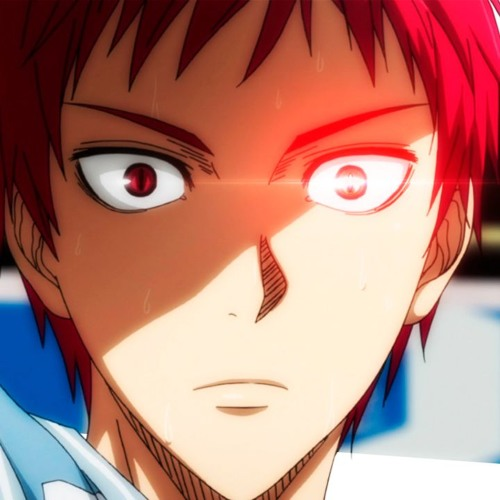

Historia da Lenda Akashi
Akashi foi o capitão da Geração dos Milagres do colégio Teiko, e ele é a única pessoa em que a Geração dos Milagres se encaixa. Logo depois da Geração se separar, Akashi foi para a Rakuzan e posteriormente se tornou o capitão do time de basquete.
Quem é ele na historia
Akashi Seijuro é um dos personagens principais do anime e mangá de esportes "Kuroko no Basquet". Ele é o capitão e jogador da posição de armador da equipe da Academia Rakuzan, conhecido como uma das melhores equipes do Japão.
Akashi é um jogador excepcional, com habilidades superiores de liderança e uma personalidade distinta. Ele tem um estilo de jogo único e imprevisível, capaz de ler os movimentos dos adversários e tomar decisões em frações de segundos. Akashi é retratado como um personagem complexo, com um passado sombrio e um lado sombrio em sua personalidade, mas que também é capaz de obediência e lealdade aos seus companheiros de equipe. Sua rivalidade com o personagem principal, Kuroko Tetsuya, é um dos elementos centrais da trama.
aqui estão algumas curiosidades sobre o personagem Akashi Seijuro de "Kuroko no Basquet":